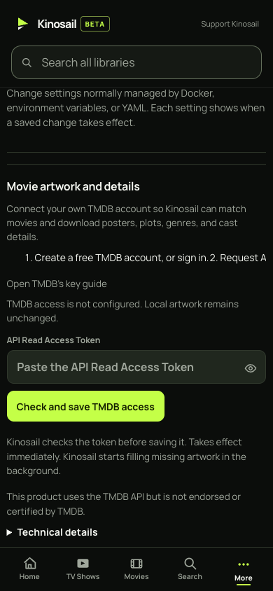
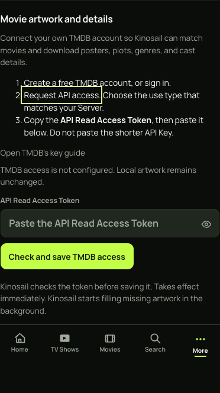
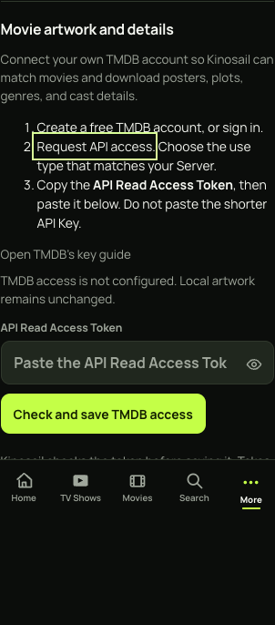
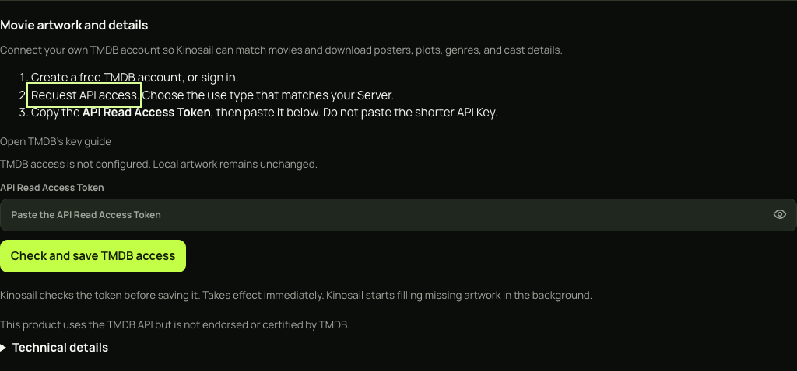

Readable setup instructions on phones
The before capture shows the full 390px viewport. The after captures show the TMDB section with all three instructions visible. The highlighted link has keyboard focus.
Audit report · Commands and evidence hashes

Before · 390px · full viewport

After · 390px · TMDB section

After · 320px · TMDB section

After · 1440px · TMDB section